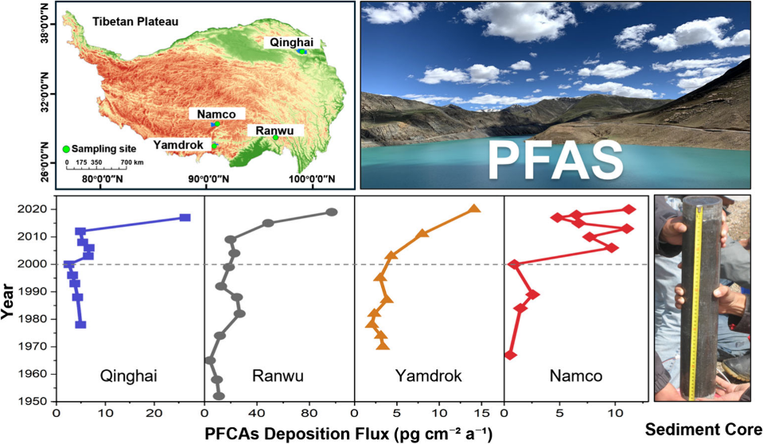

Environmental Chemistry Researcher
Investigating the occurrence, fate, and toxicity of organic contaminants in extreme environments.
Journey
Master's Program
University of Chinese Academy of Sciences | GPA: 3.42/4.00
Joined POPs Analysis and Environmental Behavior Research Group at RCEES, CAS.
Research Project
First Author | Environmental Science & Technology
Published in ES&T. Tracked 70 years of global PFAS emission history (1952-2020).
Bachelor's Degree
Southwest Minzu University | Outstanding Graduate (Rank 1/39)
Provincial Excellent Award in Innovation & Entrepreneurship Training.
Undergraduate Research
3rd Author | Microchemical Journal
Developed microwave-assisted synthesis of carbon dots for highly sensitive detection.
Research

🏔️'">Beyond Research
Photography
Music
Gaming
Hiking
3D Printing
Filmmaking
Rock Climbing
Design
DIY Science
Travel
Reading
Coffee
Publications
Environmental Science & Technology
Microchemical Journal
Contact
For my life & photography, check out Xiaohongshu (小红书):
Follow me on 小红书